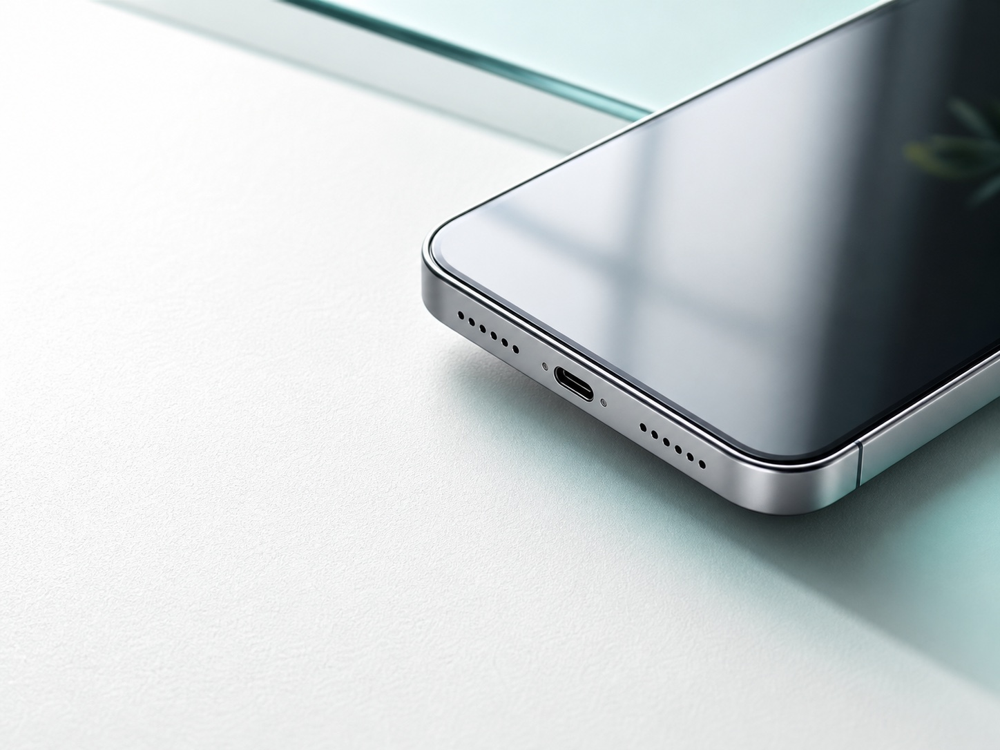
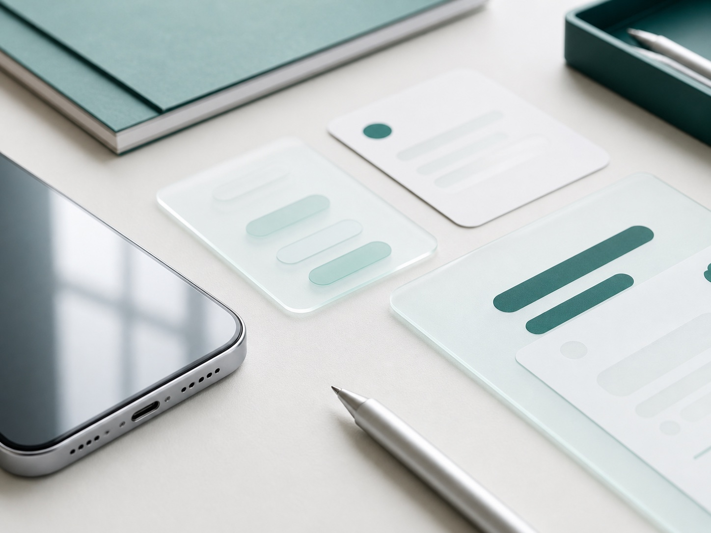
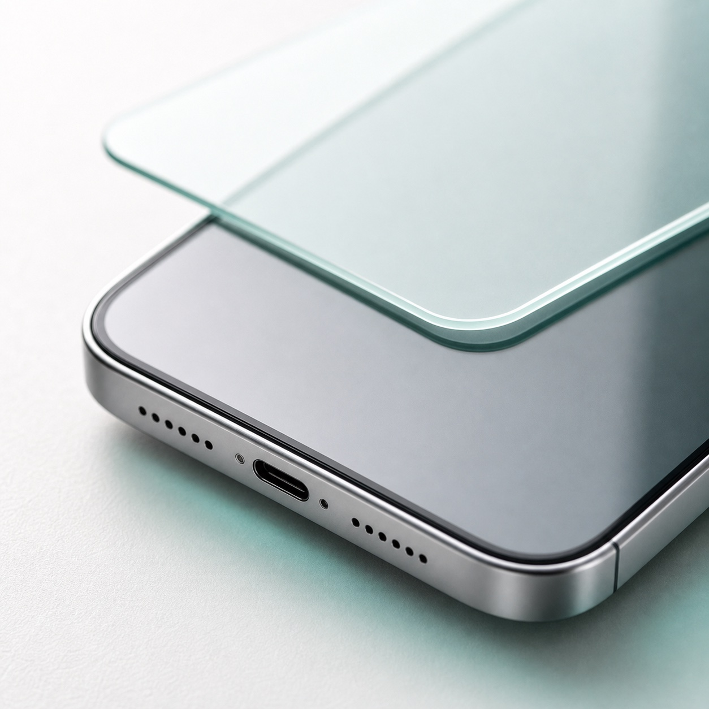
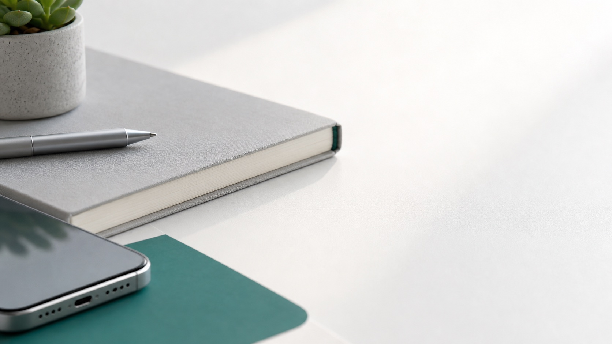

new mobile studio · 2026



// small screens first. every idea starts with a narrow job and a reason to exist. prototypes land on real devices, not slide decks.
Researching small, focused mobile tools.// narrowing down the first problem worth solving.
Building first release candidates.// prototypes on real devices, no mockups.
Publishing support and privacy pages.// this page becomes the home for released apps.
